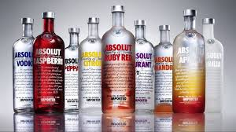
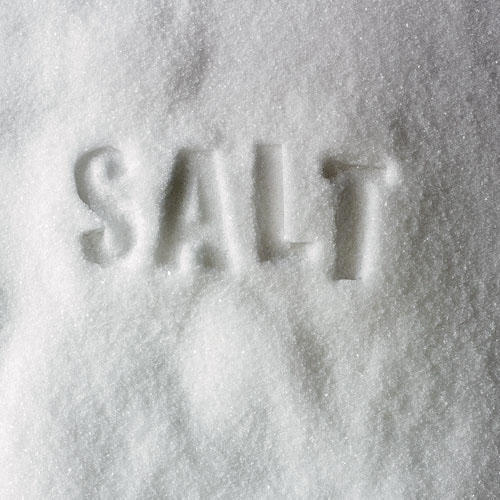

Alkohol, stearinsyra och salt
Alkohol
Det ämne som oftast kallas alkohol i vardagsspråk är etanol, CH3CH2OH.
Stearinsyra
Sterinsyra har den kemiska formeln C18H36O2 och är den vanligaste mättade fettsyran.
Salt
Natriumklorid, koksalt eller (vardagligt) enbart salt har den kemiska formeln NaCl.

